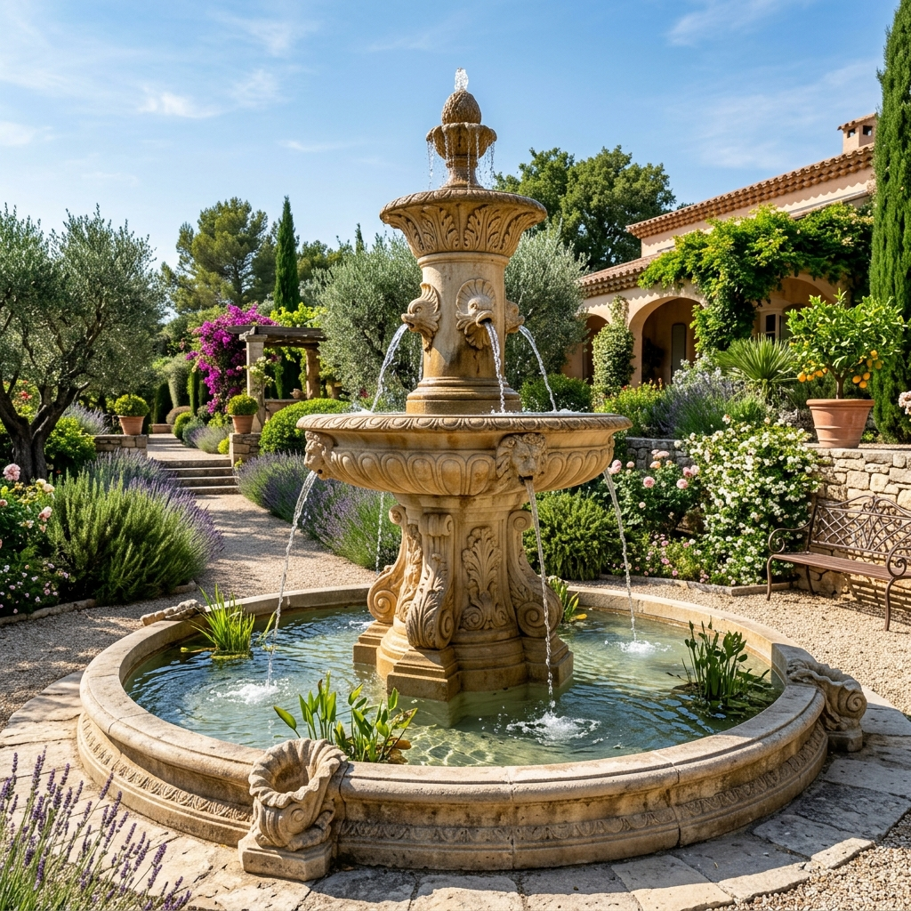
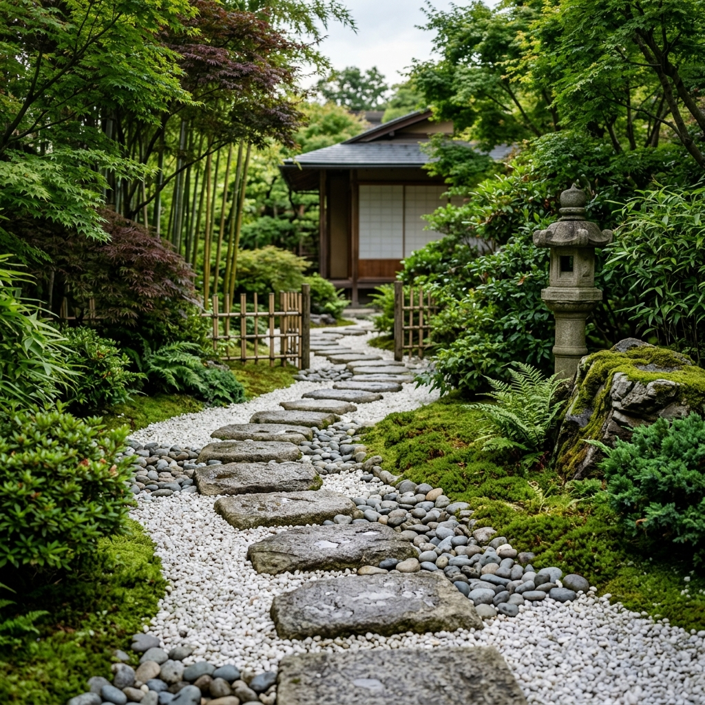

Un large choix de pierres pour habiller vos extérieurs
Bienvenue sur la page « Déco extérieure » d’OC Stone, votre spécialiste de la pierre naturelle pour embellir votre espace extérieur. Nous sommes convaincus que nos fontaines en pierre et nos pavés japonais peuvent apporter une touche d’élégance et de sophistication à votre jardin ou votre espace extérieur.
Fontaines
Nous proposons une large gamme de fontaines en pierre qui apporteront une touche de sérénité et de tranquillité à votre jardin. Nos fontaines sont fabriquées à partir de matériaux naturels de haute qualité et sont disponibles dans différentes tailles et styles pour répondre à tous les goûts et budgets.
Nous proposons également des services de pose professionnelle pour vous aider à créer un espace extérieur magnifique et harmonieux. Que vous souhaitiez créer une ambiance zen ou contemporaine, nous avons la fontaine en pierre idéale pour vous.

Pierres
En plus de nos fontaines en pierre, nous proposons également une large sélection de pavés japonais et autres pierres de décoration pour vos parterres de fleurs et allées. Ces pierres sont fabriquées à partir de pierre naturelle de haute qualité et sont disponibles dans différentes formes, tailles et couleurs pour vous permettre de personnaliser votre espace extérieur selon vos goûts.
Les pavés japonais sont particulièrement populaires pour leur esthétique élégante et leur durabilité. Nous proposons également des galets, des pas japonais et des pierres plates pour créer des motifs uniques dans votre jardin. Nos experts en décoration extérieure sont là pour vous conseiller et vous aider à trouver les meilleures solutions pour votre jardin.

Besoin d'un conseil personnalisé ?
Nos experts sont là pour affiner votre choix et vous proposer un chiffrage précis.
Nous rendre visite en showroom